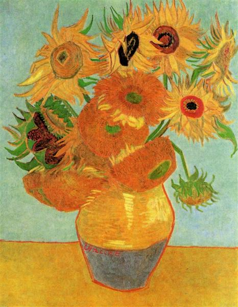
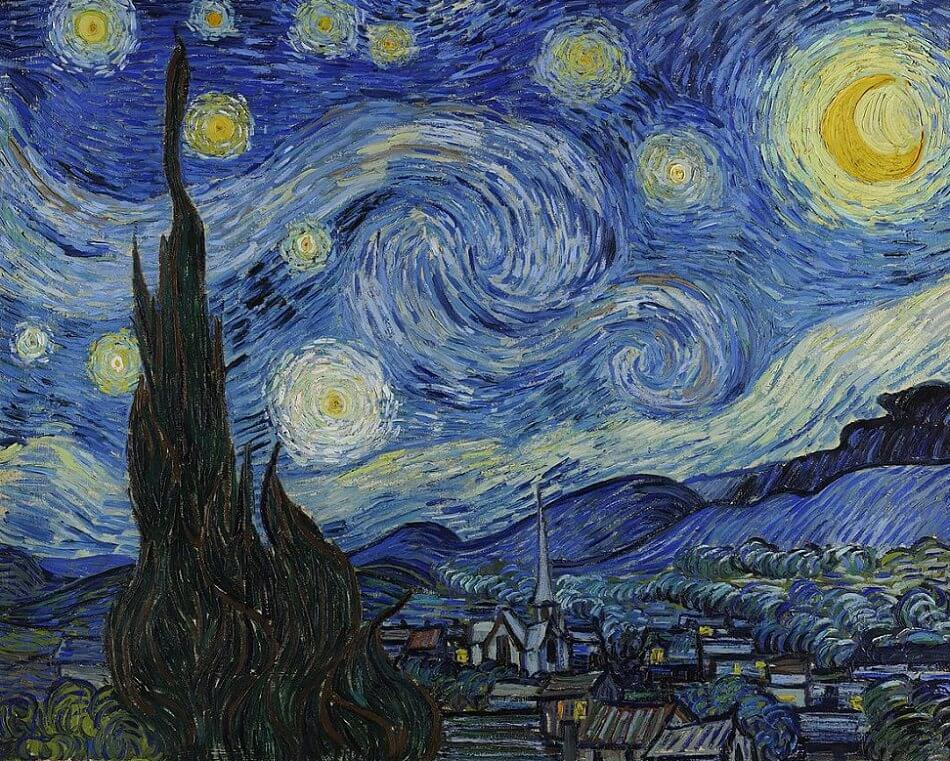

Color Palettes of Van Gogh's Post-Impressionist Works
Most Frequent Colors

Sunflowers (1888)

The Starry Night (1889)

Self-Portrait (1889)
Renowned artist Vincent Van Gogh is perhaps best known for completing famous works such as "Starry Night" and "The Sunflowers". However, Van Gogh was also one of the most prolific painters in the western art world, with over 2000 works created over the span of about 10 years. Many of his earlier works were done in the realist style, while his later works followed Post-Impressionism. Using a dataset providing the five most common colors in each of Van Gogh's works, his color preferences across time and genre can be visualized here.
Head of a Peasant Woman (1885)
The Potato Eaters (1885)
The State Lottery Office (1882)
Sunflowers (1888)
The Starry Night (1889)
Self-Portrait (1889)